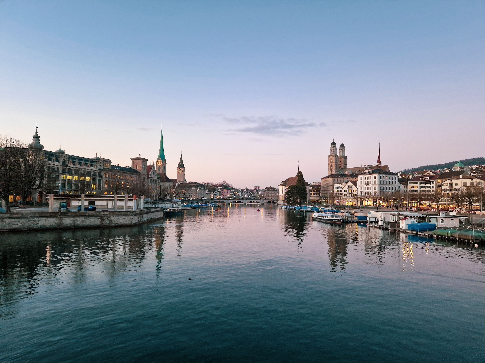
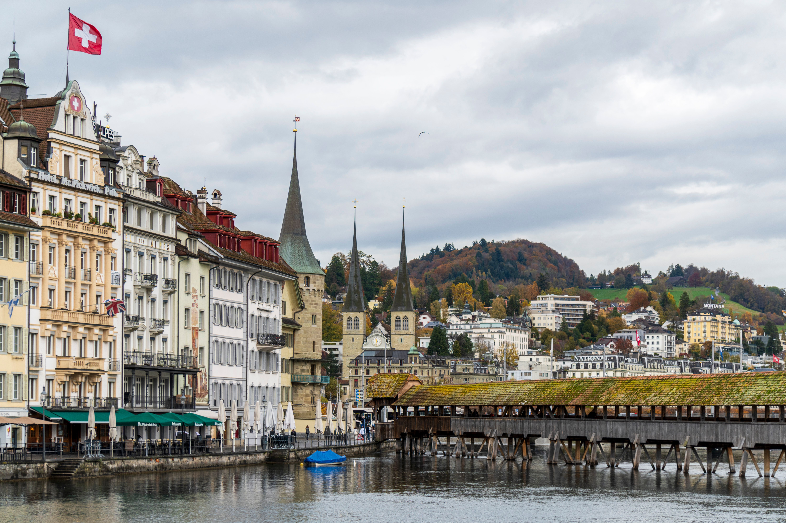
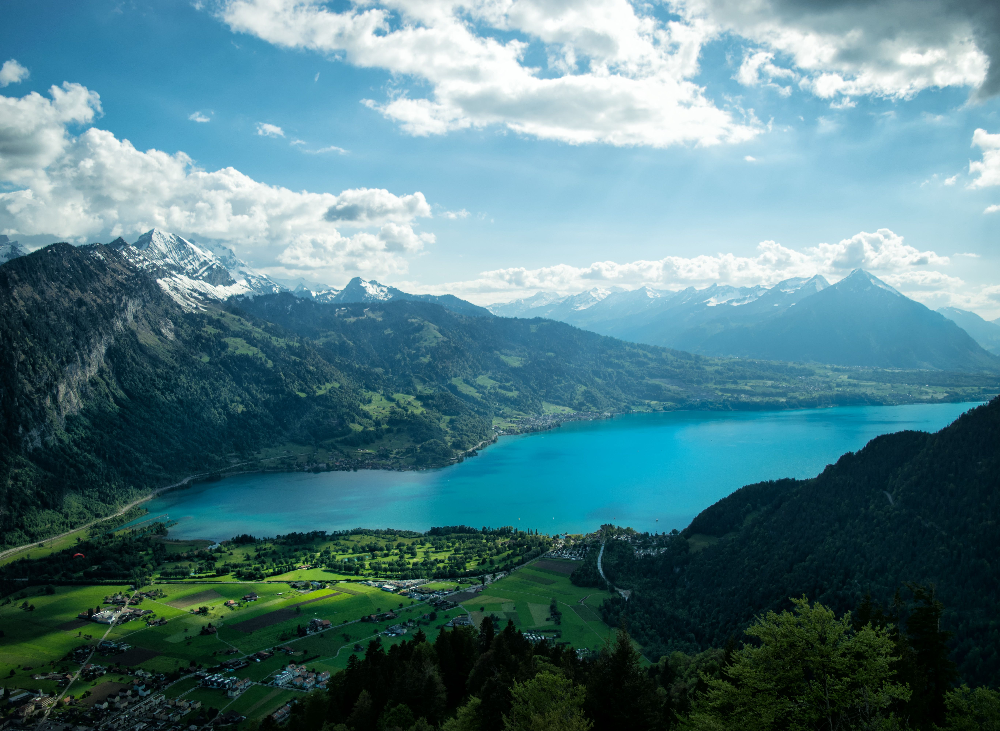

Commencez votre séjour à Zurich, la plus grande ville de Suisse. Découvrez la vieille ville et ses ruelles historiques avant de longer la rivière Limmat jusqu'au lac de Zurich. Profitez ensuite d'un moment de détente dans les quartiers animés de la ville et découvrez les spécialités suisses.

Direction Lucerne pour découvrir l'une des villes les plus pittoresques de Suisse. Promenez-vous sur le célèbre Pont de la Chapelle et admirez les façades colorées de la vieille ville. Une croisière sur le lac de Lucerne vous permettra ensuite de profiter pleinement des paysages alpins.

Partez pour Interlaken, nichée entre les lacs de Thoune et de Brienz. Entourée par les Alpes, la ville offre des panoramas spectaculaires. Prenez ensuite le train de montagne pour admirer les paysages de la région de la Jungfrau et profiter d'une journée au cœur des Alpes suisses.

Terminez votre séjour à Montreux, sur les rives du lac Léman. Promenez-vous le long des quais bordés de fleurs et découvrez le célèbre Château de Chillon. Profitez d'un dernier moment face aux Alpes avant de clôturer votre escapade suisse.
| Option de Séjour | Hébergement (Hôtels 4★) | Inclus | Prix / Pers. |
|---|---|---|---|
| Pack Évasion | Hôtels 4★ (Charme & Confort) | Vols + Trains + Petit-déjeuner | 17 900 MAD |
| Pack Signature | Hôtels 4★ Sup (Vue Lac & Montagne) | Demi-pension + Guides + Activités | 24 500 MAD |
| Pack Excellence | Hôtels 5★ (Suites avec Vue) | Pension Complète + Chauffeur Privé + Conciergerie VIP 24/7 | 34 900 MAD |